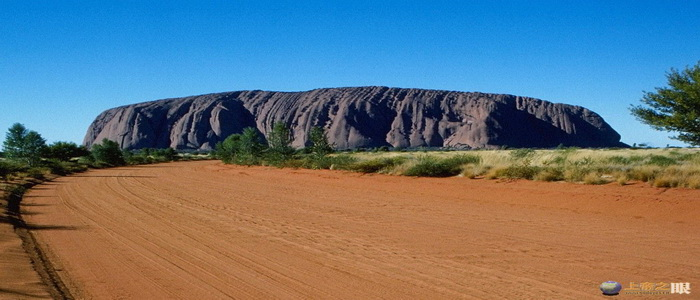

沙漠
June
04
04
澳大利亚沙漠污染
记者看到了包围在沙漠深处的污水池，浓烈得几乎令人窒息的刺鼻气味扑面而来。

澳大利亚沙漠是澳大利亚最大的沙漠，世界第四大沙漠，其由大沙沙漠、维多利亚沙漠、吉布森沙漠、辛普森沙漠四部分组成。
澳大利亚沙漠位于澳大利亚的西南部，面积约155万平方公里。这里雨水稀少，干旱异常。夏季的最高温度可达50摄氏度。因为没有高大树木的阻挡，狂风终日从这片沙漠上空咆哮而过。风是这里唯一的声音。任何人都会以为这是一片死亡之域，但在1973年，澳大利亚一个叫夫兰纳里的植物学家在骑摩托车旅行时发现，这片沙漠中竟有大约3600多种植物繁荣共生。如果按单位面积计算，物种多样性要远远超过南美洲的热带雨林。因此，发现者称这里为沙漠花园。生长在这里的植物对水和养料的需求少得可怜。
澳大利亚沙漠是澳大利亚最大的沙漠，世界第四大沙漠，其由大沙沙漠、维多利亚沙漠、吉布森沙漠、辛普森沙漠四部分组成。
澳大利亚沙漠位于澳大利亚的西南部，面积约155万平方公里。这里雨水稀少，干旱异常。夏季的最高温度可达50摄氏度。因为没有高大树木的阻挡，狂风终日从这片沙漠上空咆哮而过。风是这里唯一的声音。任何人都会以为这是一片死亡之域，但在1973年，澳大利亚一个叫夫兰纳里的植物学家在骑摩托车旅行时发现，这片沙漠中竟有大约3600多种植物繁荣共生。如果按单位面积计算，物种多样性要远远超过南美洲的热带雨林。因此，发现者称这里为沙漠花园。生长在这里的植物对水和养料的需求少得可怜。
澳大利亚沙漠是澳大利亚最大的沙漠，世界第四大沙漠，其由大沙沙漠、维多利亚沙漠、吉布森沙漠、辛普森沙漠四部分组成。
澳大利亚沙漠位于澳大利亚的西南部，面积约155万平方公里。这里雨水稀少，干旱异常。夏季的最高温度可达50摄氏度。因为没有高大树木的阻挡，狂风终日从这片沙漠上空咆哮而过。风是这里唯一的声音。任何人都会以为这是一片死亡之域，但在1973年，澳大利亚一个叫夫兰纳里的植物学家在骑摩托车旅行时发现，这片沙漠中竟有大约3600多种植物繁荣共生。如果按单位面积计算，物种多样性要远远超过南美洲的热带雨林。因此，发现者称这里为沙漠花园。生长在这里的植物对水和养料的需求少得可怜。
澳大利亚沙漠是澳大利亚最大的沙漠，世界第四大沙漠，其由大沙沙漠、维多利亚沙漠、吉布森沙漠、辛普森沙漠四部分组成。
澳大利亚沙漠位于澳大利亚的西南部，面积约155万平方公里。这里雨水稀少，干旱异常。夏季的最高温度可达50摄氏度。因为没有高大树木的阻挡，狂风终日从这片沙漠上空咆哮而过。风是这里唯一的声音。任何人都会以为这是一片死亡之域，但在1973年，澳大利亚一个叫夫兰纳里的植物学家在骑摩托车旅行时发现，这片沙漠中竟有大约3600多种植物繁荣共生。如果按单位面积计算，物种多样性要远远超过南美洲的热带雨林。因此，发现者称这里为沙漠花园。生长在这里的植物对水和养料的需求少得可怜。
澳大利亚沙漠是澳大利亚最大的沙漠，世界第四大沙漠，其由大沙沙漠、维多利亚沙漠、吉布森沙漠、辛普森沙漠四部分组成。 澳大利亚沙漠位于澳大利亚的西南部，面积约155万平方公里。这里雨水稀少，干旱异常。夏季的最高温度可达50摄氏度。因为没有高大树木的阻挡，狂风终日从这片沙漠上空咆哮而过。风是这里唯一的声音。任何人都会以为这是一片死亡之域，但在1973年，澳大利亚一个叫夫兰纳里的植物学家在骑摩托车旅行时发现，这片沙漠中竟有大约3600多种植物繁荣共生。如果按单位面积计算，物种多样性要远远超过南美洲的热带雨林。因此，发现者称这里为沙漠花园。生长在这里的植物对水和养料的需求少得可怜。 澳大利亚沙漠是澳大利亚最大的沙漠，世界第四大沙漠，其由大沙沙漠、维多利亚沙漠、吉布森沙漠、辛普森沙漠四部分组成。 澳大利亚沙漠是澳大利亚最大的沙漠，世界第四大沙漠，其由大沙沙漠、维多利亚沙漠、吉布森沙漠、辛普森沙漠四部分组成。 澳大利亚沙漠位于澳大利亚的西南部，面积约155万平方公里。这里雨水稀少，干旱异常。夏季的最高温度可达50摄氏度。因为没有高大树木的阻挡，狂风终日从这片沙漠上空咆哮而过。风是这里唯一的声音。任何人都会以为这是一片死亡之域，但在1973年，澳大利亚一个叫夫兰纳里的植物学家在骑摩托车旅行时发现，这片沙漠中竟有大约3600多种植物繁荣共生。如果按单位面积计算，物种多样性要远远超过南美洲的热带雨林。因此，发现者称这里为沙漠花园。生长在这里的植物对水和养料的需求少得可怜。
澳大利亚沙漠是澳大利亚最大的沙漠，世界第四大沙漠，其由大沙沙漠、维多利亚沙漠、吉布森沙漠、辛普森沙漠四部分组成。 澳大利亚沙漠位于澳大利亚的西南部，面积约155万平方公里。这里雨水稀少，干旱异常。夏季的最高温度可达50摄氏度。因为没有高大树木的阻挡，狂风终日从这片沙漠上空咆哮而过。风是这里唯一的声音。任何人都会以为这是一片死亡之域，但在1973年，澳大利亚一个叫夫兰纳里的植物学家在骑摩托车旅行时发现，这片沙漠中竟有大约3600多种植物繁荣共生。如果按单位面积计算，物种多样性要远远超过南美洲的热带雨林。因此，发现者称这里为沙漠花园。生长在这里的植物对水和养料的需求少得可怜。 澳大利亚沙漠是澳大利亚最大的沙漠，世界第四大沙漠，其由大沙沙漠、维多利亚沙漠、吉布森沙漠、辛普森沙漠四部分组成。 澳大利亚沙漠是澳大利亚最大的沙漠，世界第四大沙漠，其由大沙沙漠、维多利亚沙漠、吉布森沙漠、辛普森沙漠四部分组成。 澳大利亚沙漠位于澳大利亚的西南部，面积约155万平方公里。这里雨水稀少，干旱异常。夏季的最高温度可达50摄氏度。因为没有高大树木的阻挡，狂风终日从这片沙漠上空咆哮而过。风是这里唯一的声音。任何人都会以为这是一片死亡之域，但在1973年，澳大利亚一个叫夫兰纳里的植物学家在骑摩托车旅行时发现，这片沙漠中竟有大约3600多种植物繁荣共生。如果按单位面积计算，物种多样性要远远超过南美洲的热带雨林。因此，发现者称这里为沙漠花园。生长在这里的植物对水和养料的需求少得可怜。
曾经翠绿的山坡开始裸露黄土地，绿毯似的大地外衣被一层一层地剥掉。
金黄色的沙漠，由于人类过度砍伐，而不断向四周漫延。
罪魁祸首——人类，却正在享受从大自然中获得的荣华富贵。
我们提倡环保，不是说说而已，从我做起，从点滴小事做起！